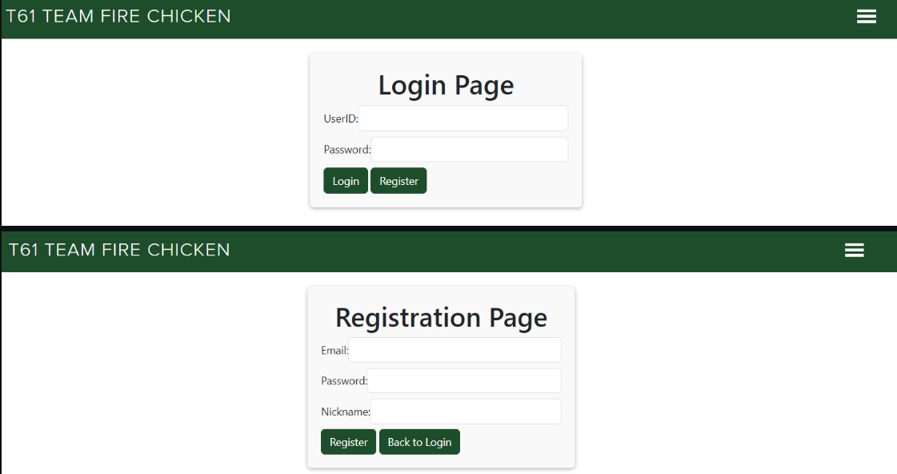
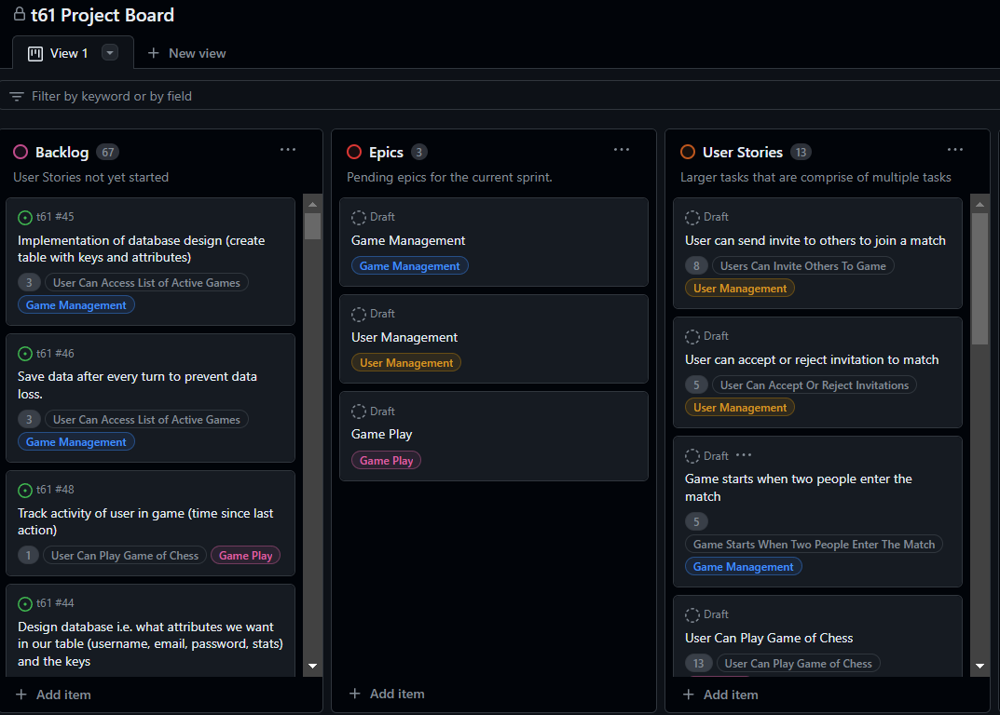

Web Chess Game
Languages/Tools Used: Java and GitHub Projects
Working in a Scrum SDLC on a team of 4 other students, we designed a chess web application similar to chess.com. The project focused on building the system from the ground up by translating customer requirements into user stories, modeling domains, and classes. We were not expected to complete the project in its entirety because of its large scale, so there was a focus placed on designing and redesigning the system as we learned about design patterns and handled coupling and cohesion in the design. We were given full creative freedom to translate the requirements as we saw fit.
How it Works
Although our team did not finish the project in its entirety, the idea was that a user could log in to our website and play chess against an AI or an online opponent. The user could play multiple opponents at a time, having to wait for their opponent after they made their move. Stats would be stored on each user, such as wins/losses, and be viewable on a profile. Information on past games, including game replays, was also a planned feature.
Skills Learned
Throughout this project, I learned how to translate requirements into user stories and use design patterns to create a project from the ground up. I also continued to grow my experience working in a Scrum team.

